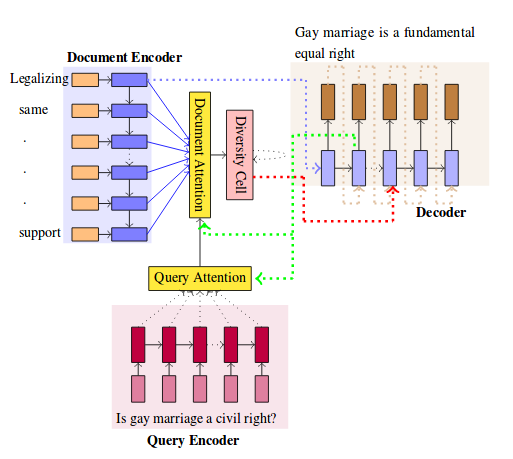

Motivation
The encode-attend-decode paradigm has achieved notable success in machine translation, extractive summarization, dialog systems, etc. But it suffers from the drawback of generation of repeated phrases.
In this project we primarily implemented “Diversity driven Attention Model for
Query-based Abstractive Summarization” ACL paper.
The project is to create short summaries
for the given documents corresponding to a given query
The encode-attend-decode paradigm has achieved notable success in machine translation, extractive summarization, dialog systems, etc. But it suffers from the drawback of generation of repeated phrases.
Our Model for the query-based summarization task based on the encode-attend-decode paradigm with two key additions
A query attention model (in addition to document attention model) which learns to focus on different portions of the query at different time steps (instead of using a static representation for the query)
A new diversity based attention model which aims to alleviate the problem of repeating phrases in the summary.
The Model trained to perform the query-based summarization
Given a query q = q1, q2, ..., qk containing k words, a document d = d1,
d2, ..., dn containing n words, the task is to generate a contextual
summary y = y1, y2, ..., ym containing m words.
The following figure depicts our model architecture.

We now describe a way of modeling p(yt |y1, ..., yt-1, q, d) using the neural
encoder-attention-decoder paradigm. The proposed model contains the following components:
The dataset is from Debatepedia an encyclopedia of pro and con arguments and quotes on critical debate topics. There are 663 debates in the corpus (only those debates are considered which have at least one query with one document). These 663 debates belong to 53 overlapping categories such as Politics, Law, Crime, Environment, Health, Morality, Religion, etc. A given topic can belong to more than one category. For example, the topic "Eye for an Eye philos.
We evaluate our models on the dataset described above.
We used ROUGE metrics to evaluate our model and we obtain the following rouge scores evaluated on the test set:
- rouge-1: 28.074
- rouge-2: 2.183
- rouge-L: 21.681
In this project we implemented a query based summarization method. The model we implemented gives us the flexibility to: